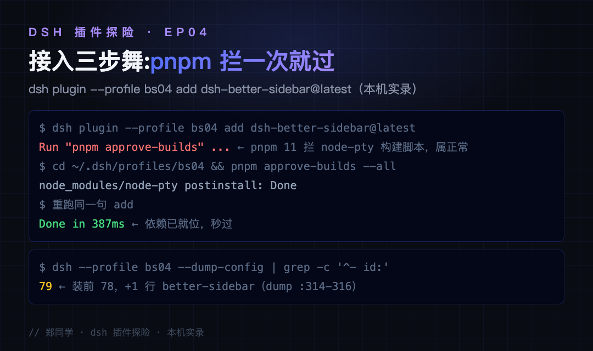
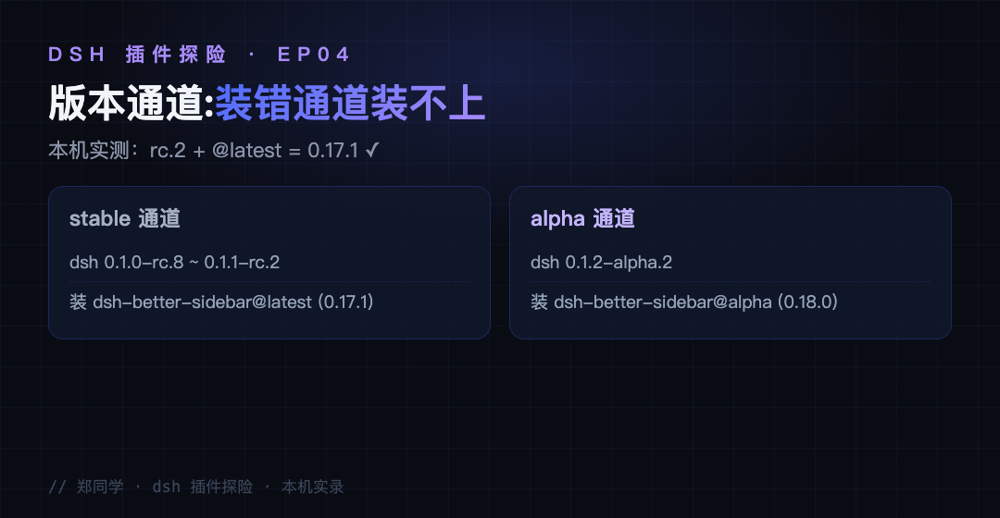
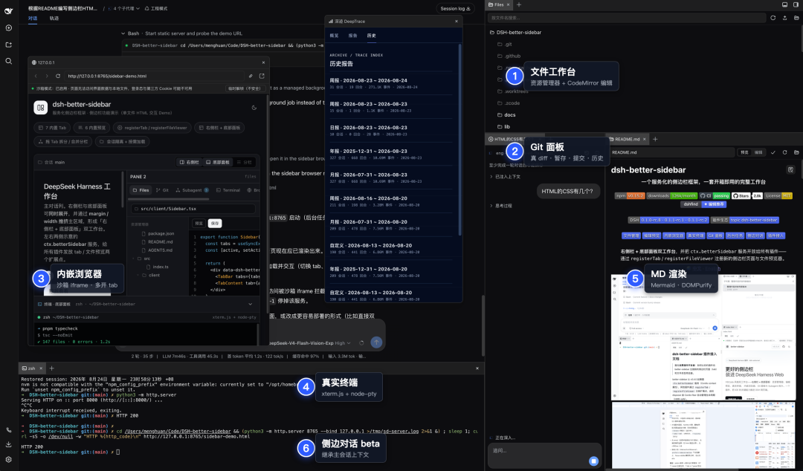
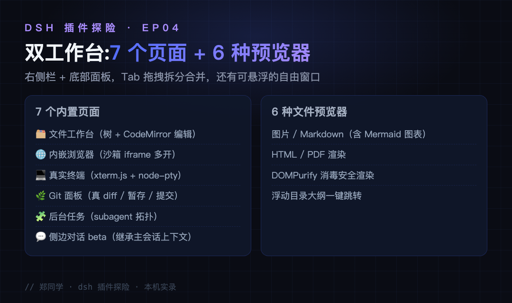
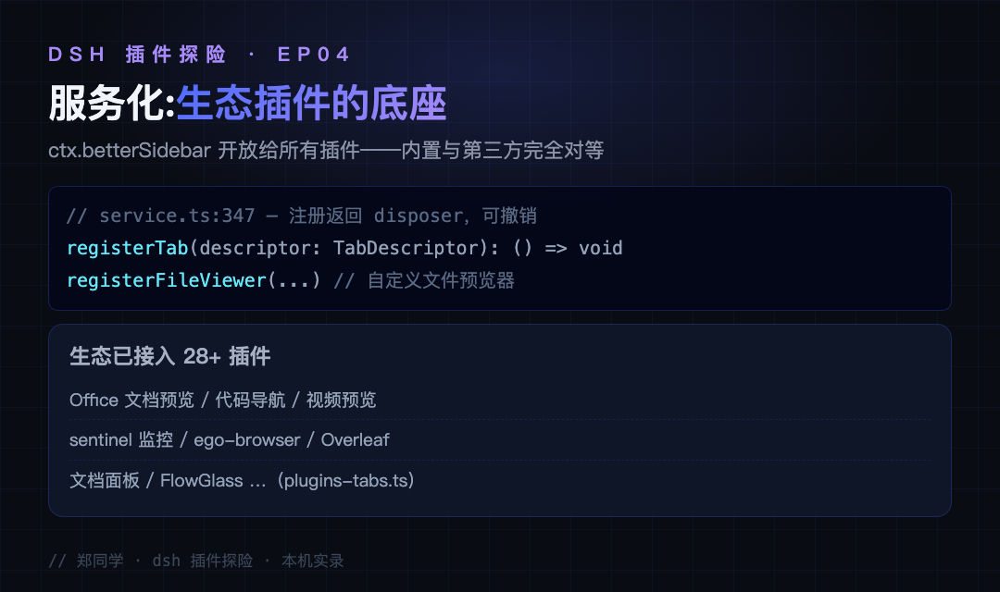

带 agent 干活，你的屏幕大概率是这样：左边 dsh 会话在跑，右边开着自己的编辑器看它改了什么，再切一个终端手动验证，再开个网页查文档——agent 在干活，你在给它打杂，屏幕窗口越开越乱。
三个高频憋屈，对着号：
场景一：它改了什么，我看不见。 得自己开 git diff、翻文件。你想要的其实是：它一动文件，侧边栏里文件树、diff、编辑器全都实时在那。
场景二：想问个小问题，又怕污染会话。 长对话攒了半天的上下文和缓存，一个小问题插进去，思路被稀释还得等它重新转。你想要的其实是：一个继承当前上下文、但独立运行的侧聊窗口。
场景三：工具太多没地方放。 想一边开着预览页一边对话，还想挂个常驻终端随手敲命令。你想要的其实是：一块可拆分、可悬浮、按会话记住布局的工作台。
这三个场景，dsh-better-sidebar（3.1k star）全包了：右侧栏 + 底部面板双工作台，文件树、CodeMirror 编辑器、真实终端、Git 面板、内嵌浏览器、后台任务、侧边对话七个页面全内置。还是系列固定四段：接入、使用、截图切图看功能、源码简单分析大概实现。
● ● ●
先说清楚它的形态：这不是往会话里加功能的插件，而是把 dsh web 的侧边栏整个换成一个服务化工作台——并且把 ctx.betterSidebar 服务开放给所有插件，第三方可以注册自己的侧边栏页面和文件预览器，与内置能力完全对等。
本机实录（dsh v0.1.1-rc.2，临时 profile bs04）：
$ dsh plugin --profile bs04 add dsh-better-sidebar@latest
Run "pnpm approve-builds" ... ← 第一次必失败：pnpm 11 拦 node-pty 构建脚本
$ cd ~/.dsh/profiles/bs04 && pnpm approve-builds --all
node_modules/node-pty postinstall: Done
$ 重跑同一句 add
Done in 387ms using pnpm v11.24.0 ← 依赖已就位，秒过
这个"三步舞"是 node-pty（真实终端的底层依赖）需要编译构建，pnpm 11 默认拦截构建脚本——官方 README 把它列为第一个常见问题。--dump-config 对账：装前 78 条，装后 79 条，多的那行 - id: better-sidebar（dump 第 314-316 行）。它和前三期最大的不同：前三期给 agent 加能力，这一期给"你"加界面——屏幕上多出来的每一块，都是给人看的。

图：接入实录——三步舞完整输出与 dump 对账（本机实录）
装之前先看版本通道：这个插件分两条 npm 通道，装错通道会不兼容——stable 通道 @latest（v0.17.1）配 dsh 0.1.0-rc.8 ~ 0.1.1-rc.2；alpha 通道 @alpha（v0.18.0）配 0.1.2-alpha.2。本机 rc.2 + @latest 实测可用。

图：版本通道对照——stable 用 @latest，alpha 用 @alpha
● ● ●
装完硬刷新浏览器（Cmd/Ctrl+Shift+R）即可，client 改动热加载、无需重启。右侧栏七个页面、底部面板，Tab 可以拖拽拆分合并，还能把任意 tab 拖到主会话区域变成可移动、可缩放、可置顶的自由窗口。布局按会话持久化，切换会话互不干扰。
对你来说，装完之后的变化是三件小事：它每次改了哪些文件，Git 面板实时可见，不用自己开 diff；想敲命令点开内置真实终端（xterm.js + node-pty，和 agent 用的同一个 shell），不动你自己的终端；小问题走侧边对话——它继承主会话的完整上下文独立运行，答案满意可一键"保存为新会话"，不满意随手关掉，主会话的上下文分毫未动。
几个值得单独说的细节。固定终端：右键终端 Tab 可以"固定到工作区 / 固定到全局"，固定后切换会话它也不消失，点击就地激活、PTY 直连宿主会话——agent 起的长任务你能全程盯着。自由窗口：把任意 tab 拖进主会话区域，变成默认 390×780 的悬浮窗，可移动、可缩放、可置顶，拖回侧边栏就停靠，布局随会话记住。内嵌浏览器有条分流规则：HTTP 链接在侧边栏内打开，HTTPS 默认交回系统浏览器——沙箱里跑非加密内容、正式站点给专业浏览器，安全边界想得比你细，设置页两项都能调。
● ● ●
内置能力一览：文件工作台（懒加载目录树 + CodeMirror 编辑器，图片 / Markdown 含 Mermaid / HTML / PDF 全都能预览，DOMPurify 消毒安全渲染）、内嵌浏览器（沙箱 iframe 多开 tab，HTTP 在侧边栏打开、HTTPS 走系统浏览器，可调）、真实终端、Git 面板（真 diff、右键暂存提交还原、自动发现子仓库）、后台任务页（subagent 拓扑 + 实时输出 + 强制终止）。

图：dsh-better-sidebar 工作台全览——六个功能点已标注在图上（官方仓库截图）

图：内置 7 页面 + 6 预览器一览
性能上有个反直觉的细节：功能这么多，启动只拉 约 325KB 核心——终端、编辑器、Mermaid 图表这些重依赖用到才按需拉取，分包设计有专门的设计文档。界面文案跟随 dsh 语言实时切换（zh / en），装个第三方语言包还能覆盖出日语。
● ● ●
src/ 共 131 个 TS/TSX 文件、约 3.5 万行——四期里最重的插件，但设计主线只有一条：服务优先。
服务化 API（src/client/service.ts，registerTab(descriptor) 在 :347）：内置的 7 个页面和第三方插件走同一个接口 ctx.betterSidebar.registerTab / registerFileViewer，注册返回 disposer 可撤销——内置能力对第三方没有任何特权（内置页注册在 builtins/index.ts:27，和生态插件调的是同一个方法）。
生态插件名录（src/client/plugins-tabs.ts / plugins-viewers.ts）：Office 文档预览、代码导航、视频预览、sentinel 监控、Overleaf、文档面板……28+ 生态插件接在这套 API 上。它的理念写在 README 里：官方不再内置、可由生态提供的功能，交由生态插件实现——内置的 7 个页面反而是"没有生态之前"的保底。
工程细节：按需加载的分包设计有专门的设计文档（docs/plans/ 懒加载 chunks）；node-pty 断线重连回放；会话布局持久化带陈旧状态自动净化。README 的常见问题表覆盖了安装、双挂载、Windows 终端等全部踩坑点——文档质量在生态里是第一梯队。

图：服务化 API 与 28+ 生态插件——registerTab 返回 disposer 可撤销
和前三期连线：dsh-context 加观察窗、routing-suite 换挡位、agent-teams 组队伍，这一期是给它们所有能力搭了个工作台——上面这些插件的能力，未来都可以长进这块侧边栏。
还有一个把"单向"变"双向"的设计：设置里开启后，插件给模型注入 sidebar_open 工具——agent 觉得你该看某个文件时，可以主动在你的侧边栏打开它（文件树以那个目录为根），甚至直接打开一个网页。以前是你追着它看产出，现在是它把证据递到你面前。所有侧边卡片在设置页逐项独立开关，声明式配置不动手改文件。
边界也说全（README 的已知限制一节原文很实诚）：Git 面板没有 push/pull/fetch——合并还是得回终端或网页；终端 tab 拖到另一分栏会重开 shell；内嵌浏览器没有登录态、被 X-Frame-Options 拒绝嵌入的站点（如 arxiv）会给你一个"去浏览器打开"的原因面板；移动端没有底部面板。把做不到的列清楚，和把做到的做好，是同一种能力。
● ● ●
评论区一定会问：星更高的有没有？有——dsh-web（zhu1090093659，6.5k star），走的另一条路：聚合全家桶。它把任务看板（多列看板 + cron 定时执行）、移动端远程（扫码配对、SSE 实时同步）、SSH 运维面板（终端 / 传输 / 隧道 / 集群）、图像理解（describe_image 工具）、皮肤创意工坊（dsh-market.com）全部打包，一次装齐一个完整的 AI 开发工作台；右侧面板同样提供资源管理器 / 编辑器 / 终端 / Git / 浏览器。
两家怎么选，一句话：better-sidebar 是"底座"，dsh-web 是"全家桶"。
| dsh-better-sidebar | dsh-web 全家桶 | |
|---|---|---|
| star | 3.1k | 6.5k |
| 形态 | 侧边栏框架 + 服务化 API | 多插件聚合包 |
| 独有能力 | 第三方 registerTab 完全对等、自由窗口、固定终端、侧边对话 | 任务看板、移动端远程、SSH 面板、图像理解、皮肤工坊 |
| 适合 | 想给生态插件当底座、按需组装 | 想开箱即用一次装齐 |
| 版本 | stable=@latest / alpha=@alpha 双通道 | 当前对齐 0.1.2-alpha.1 |
而且两者可以叠加：dsh-web 的全家桶能把 dsh-better-sidebar 作为外部插件拼进去——底座和全家桶不是对手，是上下铺。另外三句边界：anywhere-labs/dsh-desktop（22k）是桌面端形态，iPolloWork（5.1k）是多引擎工作台，它们和 open-design 一样属于"桌面客户端"这条产品线，不在"web 内插件"的对比范围里。
● ● ●
ctx.betterSidebar 对所有插件开放 registerTab / registerFileViewer，28+ 生态插件同 API 接入，核心只拉 325KB。下一篇继续探险。候选清单新增：dsh-web 全家桶逐插件拆解、dsh-market 创意工坊生态——或者你来点名。
源码地址：